Integral de línea en el plano complejo
Podemos distinguir entre las integrales definidas y las indefinidas. Una indefinida será aquella cuya derivada es igual a una función analítica en una dada región. Invirtiendo las fórmulas de diferenciación podemos encontrar muchas integrales indefinidas.
Por su parte las integrales complejas definidas se las llama integrales de linea complejas y se escriben
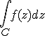
donde el integrando f(z) se integra sobre una dada curva C o una porción de ella. Esta curva en el plano complejo se lo llama camino de integración. Representado paramétricamente resulta:
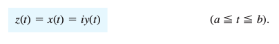
El sentido en el que t aumenta, es llamado el sentido positivo y se dice que la curva C está orientada según la parametrización de arriba.
Por ejemplo una porción de la recta y = 3x está dada por z(t) = t + i 3t con 0 ≤ t ≤ 2. La circunferencia de radio 4 centrada en el origen, C: | z | = 4 se parametriza z(t) = 4 cos(t) + i 4 sen(t) con -π ≤ t ≤ π, recorrida en el sentido contrario a las agujas del reloj.
Asumiremos C como una curva suave, tiene en cada punto una derivada distinta de cero y continua.
Propiedades: La integral definida es lineal, se puede subdividir como suma de subintegrales de pedazos que conforman C, y al invertir el sentido de integración se invierte el signo de la integral.
Primer método. Caso en el que existe la integral indefinida
Definimos: Un dominio D es simplemente conectado o conexo si toda curva simple cerrada (curva cerrada que no se corta a si misma) encierra solamente puntos de D. Ejemplo, un disco es simplemente conexo, un anillo no lo es.
Sea f(z) una función analítica en un dominio simplemente conexo D. Luego existe una integral indefinida en el dominio D, F(z) tal que F ' (z) = f(z) en D y para todos los caminos en D que unen los puntos z0 y z1 en D tendremos:
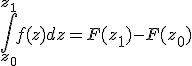
Ejemplo: 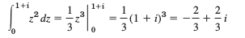
Segundo método. Utilización de un camino.
Este método no se limita a funciones analíticas.
Sea C una curva suave que se puede representar por z = z(t) con a ≤ t ≤ b. Sea f(z) una función continua sobre la curva C.
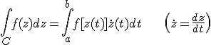
Pasos a seguir
- Representamos la curva C en forma paramétrica z(t) con a ≤ t ≤ b
- Calculamos la derivada 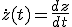
- Sustituimos z(t) en cada z de f(z)
- Integramos sobre t
Ejemplo: Integramos 1/z sobre un circulo unitario centrado en el origen recorrido en el sentido antihorario.
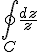 con C: |z| = 1
No podemos utilizar el primer método ya que 1/z no es analítica en z=0 y todo camino simplemente conexo que contenga al círculo unitario debe contener a z = 0 por lo que debemos utilizar el segundo método:
- parametrizamos la curva z(t) = cos(t) + i sen(t) = eit con -π ≤ t ≤ π (recorremos en sentido antihorario).
- Derivamos = i eit (regla de la cadena)
- Reemplazamos

Ejemplo: Integramos 1/zm con m un entero sobre un círculo de radio ρ centrado en z0 recorrido en el sentido antihorario.
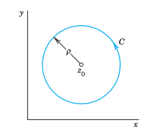
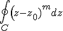 con C: |z - z0| = ρ
- parametrizamos la curva z(t) = z0 + ρ cos(t) + i ρ sen(t) = z0 + ρ eit con -π ≤ t ≤ π (recorremos en sentido antihorario).
- Luego 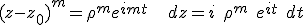
- 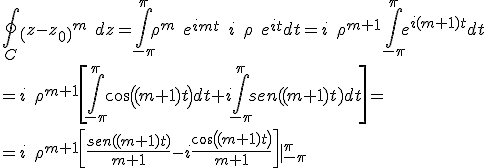
Esta integral por lo tanto da cero para todo m ≠ -1 mientras que para m = -1 da como resultado 2 π i
Nota: Por lo general una integral de línea de una función no analítica depende del camino de integración.
Calcular la integral de f(z) = Re(z) entre 0 y 1 + 2 i los los siguientes caminos
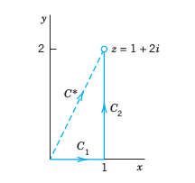
Obra publicada con Licencia Creative Commons Reconocimiento 4.0